Material importieren
In LemmaLoom beginnt die Arbeit damit, dass Sie den Inhalt Ihres Materials in das Projekt selbst übernehmen. Dateien, Webseiten und Aufnahmen werden alle als Dokumente importiert. Danach lesen, kodieren und analysieren Sie alle auf dieselbe Weise. Je nach Quelle verarbeitet LemmaLoom das Material vorher unterschiedlich stark. Eine reine Textdatei etwa kommt unverändert an. Beim Import eines PDF-Dokuments oder einer Webseite extrahiert LemmaLoom den Text automatisch für Sie. Aus einem Audio- oder Videodokument entsteht automatisch ein Transkript.
Möglichkeiten des Imports
| Material | Befehl | Was das Projekt behält |
|---|---|---|
| Reine Textdateien | Ablage ▸ Importieren ▸ Dokumente (⇧⌘I) | Den Text |
| PDF-Dateien | Ablage ▸ Importieren ▸ Dokumente (⇧⌘I) | Den Text der Seiten |
| Webseiten | Ablage ▸ Importieren ▸ Webseiten (⌥⇧⌘I) | Den Text des Artikels |
| Audio- und Videodateien | Ablage ▸ Importieren ▸ Dokumente (⇧⌘I) | Ein Transkript und eine Kopie der Aufnahme zum Abspielen |
| REFI-QDA-Projekte und -Codebücher | Ablage ▸ Importieren ▸ REFI-QDA-Projekt oder REFI-QDA-Codebuch | Siehe Kapitel 22, Austausch und Export |
| LemmaLoom-Archive | Ablage ▸ Importieren ▸ LemmaLoom-Archiv | Siehe Kapitel 22, Austausch und Export |
| Das Beispielprojekt | Ablage ▸ Importieren ▸ Beispielprojekt | Ein neues Projekt, „Klimadebatte“, bereits indiziert |
| Attributwerte in einer Tabelle | Importieren im Fenster Attribute des Projekts | Werte für Dokumente, die schon im Projekt sind |
Verwenden Sie nach Möglichkeit reinen Text in der Kodierung UTF-8. Bei einem Import als reiner Text behält LemmaLoom genau das, was getippt wurde. Manches Material liegt aber vielleicht nur als PDF vor, etwa ein veröffentlichter Bericht. Prüfen Sie nach dem Import eines PDFs, ob Ihre Absätze richtig übernommen wurden. Webartikel kann LemmaLoom importieren, wenn es ohne Anmeldung darauf zugreifen kann. Liegt ein Webartikel hinter einer Anmeldung, sichern Sie ihn in Ihrem Browser als PDF und importieren Sie dieses. Wenn Sie eine Aufnahme beim Lesen und Kodieren abspielen möchten, importieren Sie sie direkt in LemmaLoom. Kommt es auf die Wiedergabe nicht an, können Sie ein abgetipptes Transkript auch als reine Textdatei importieren.
REFI-QDA ist das Standardformat für den Austausch zwischen LemmaLoom und anderer Software für qualitative Datenanalyse. Verwenden Sie REFI-QDA, um Projekte und Codebücher auszutauschen.
Sie können Dateien auch direkt aus dem Finder importieren. Doppelklicken Sie dazu auf ein LemmaLoom-Archiv (.llz), ein REFI-QDA-Projekt (.qdpx) oder ein REFI-QDA-Codebuch (.qdc). Wohin eine Datei kommt, hängt von ihrem Inhalt ab. Ein REFI-QDA-Projekt wird immer als neues Projekt hinzugefügt, ebenso ein archiviertes Projekt. Codebücher sowie Archive eines Sets oder einzelner Dokumente kommen in das Projekt, das in diesem Moment in der Seitenleiste ausgewählt ist. Prüfen Sie deshalb vor dem Import, ob die richtige Auswahl getroffen ist.
Die meisten Beispiele in diesem Handbuch stammen aus „Klimadebatte“. Sie können das Projekt mit Ablage ▸ Importieren ▸ Beispielprojekt importieren. Es kommt vollständig indiziert und sofort einsatzbereit an, in der Sprache der Oberfläche. Die meisten Dokumente sind Importe aus reinem Text, nämlich die Meinungsbeiträge, Kolumnen, Blogbeiträge und eine Rede. Dazu kommen ein Bericht als PDF, ein Nachrichtenartikel aus dem Internet und die Aufnahme einer Radiodebatte.
Jedes Dokument gehört zu genau einem Projekt. Die Menüeinträge Dokumente und Webseiten bleiben deaktiviert, bis Sie in der Seitenleiste ein Projekt auswählen. Das Fenster Aktivität bietet dieselben beiden Befehle und hat zusätzlich das Menü, das den Namen des Projekts zeigt. Siehe Das Fenster „Aktivität“ in der zweiten Hälfte dieses Kapitels.
Übersetzungen kann LemmaLoom selbst aus Dokumenten erzeugen, die bereits in Ihrem Projekt sind. Jede erzeugte Übersetzung erscheint unter ihrem Ausgangsdokument. Im Projekt „Klimadebatte“ steht zum Beispiel „Uns läuft die Zeit davon (Englisch)“ unter „Uns läuft die Zeit davon“. Siehe Kapitel 9, Übersetzungen und geteilte Ansicht. Eine Übersetzung, die Sie von außen importieren, gilt als gewöhnliches Dokument.
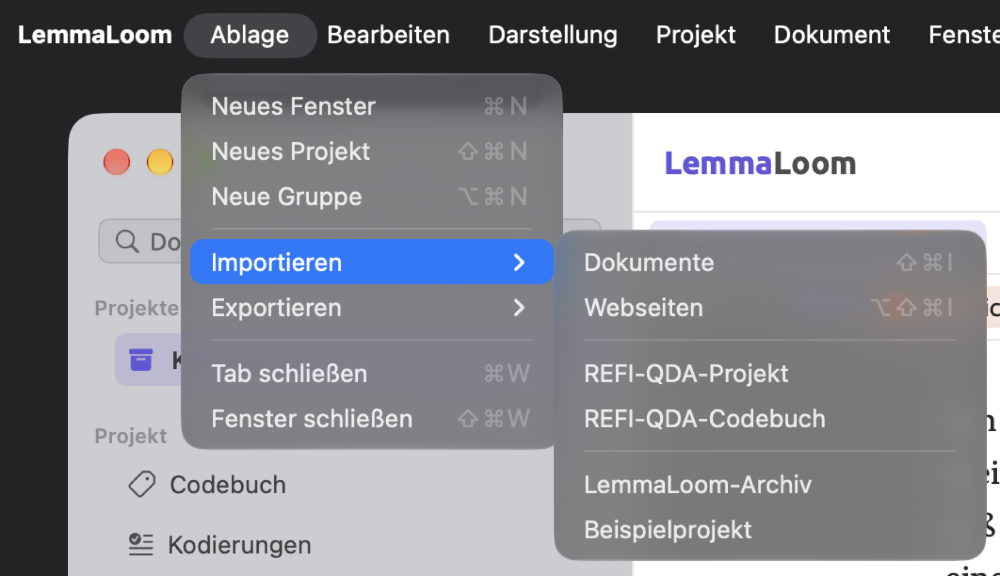
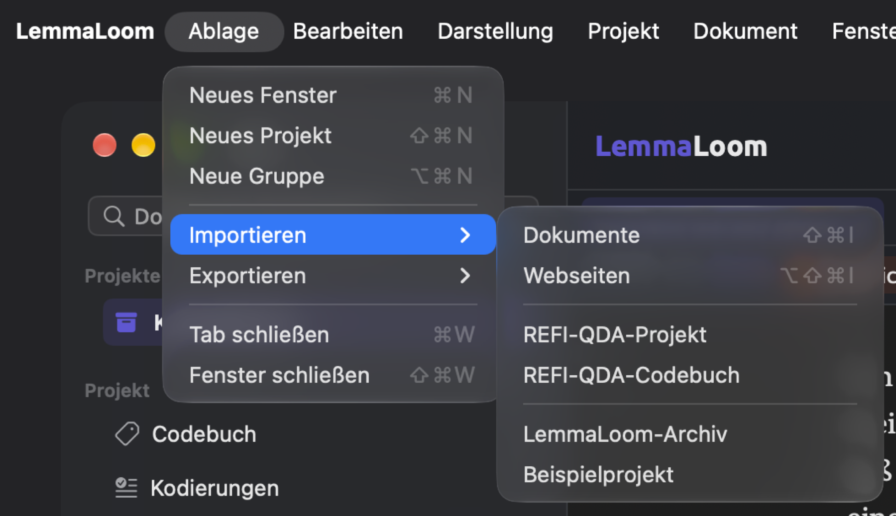
Wichtige Begriffe
- Im Importdialog für ein PDF oder eine Webseite steht oben immer eine Quellvorschau. Sie zeigt Angaben zu Ihrer Quelle, bevor diese in LemmaLoom importiert ist. So erkennen Sie Probleme wie eine falsche Datei oder unlesbaren Text schon vor dem Import.
- Die Textebene eines PDFs enthält echten, lesbaren Text und keine Abbildung der Seiten des Dokuments. Vielen Scans fehlt diese Ebene.
- Transkript nennt LemmaLoom den Text, den es aus Aufnahmen oder anderen Medien erzeugt. Jedes Transkript besteht aus vielen Transkriptsegmenten, meist je ein Satz lang, die bestimmten Zeitpunkten im Medium entsprechen. Jede Passage des Transkripts ist mit ihrer Stelle im Medium verknüpft und enthält Angaben wie den Sprecher, die Anfangszeit und die Endzeit.
- Die Grammatikanalyse Ihrer Dokumente heißt in LemmaLoom Indizierung. Dabei wird Ihr Text in Sätze und Tokens (Wörter und Satzzeichen) zerlegt; LemmaLoom bestimmt, wie diese Tokens voneinander abhängen und sich zu Phrasen gruppieren, und versieht jedes Token mit seinem Wortart-Tag. Neue Dokumente werden nach dem Import im Hintergrund indiziert, sofern Sie beim Import Für die Grammatikanalyse indizieren nicht deaktivieren. Siehe Nach dem Import weiter unten in diesem Kapitel.
- Analysatoren suchen, sobald die Indizierung abgeschlossen ist, nach bestimmten sprachlichen Merkmalen und annotieren die Passagen, die sie finden. Zwei Beispiele sind Metadiskurs und Rhetorik.
Dokumente importieren
Textdateien, PDFs und Aufnahmen importieren Sie mit demselben Befehl. Sie können alle drei Dateiarten in einer Auswahl mischen. Im Beispiel „Klimadebatte“ stammt „Radiodebatte“ aus einer Audiodatei und „Hitzebericht 2024“ aus einer PDF-Datei. Die elf Kommentartexte des Beispiels stammen dagegen aus reinen Textdateien.
So importieren Sie Dokumente:
- Wählen Sie in der Seitenleiste das Projekt aus.
- Wählen Sie Ablage ▸ Importieren ▸ Dokumente (⇧⌘I).
- Wählen Sie die Dateien aus und klicken Sie auf Öffnen.
- Für die erste Datei öffnet sich der Dialog Dokument importieren. Prüfen Sie den Namen und tragen Sie ein, was Sie über das Dokument wissen (siehe Der Dialog „Dokument importieren“ weiter unten).
- Klicken Sie auf Importieren. Haben Sie mehr als eine Datei gewählt, öffnet sich der Dialog erneut für die nächste.
Wenn Sie mehrere Dokumente importieren, zeigt der Dialog oben rechts einen Zähler mit der Position der aktuellen Datei und der Gesamtzahl der Dateien, zum Beispiel 2 von 6. Überspringen lässt das aktuelle Dokument aus und lädt das nächste in der Warteschlange. Abbrechen verwirft das aktuelle Dokument und alle folgenden und schließt dann den Dialog. Dokumente, die aus dem Stapel bereits importiert wurden, bleiben wie gewohnt im Projekt.
Importe laufen im Hintergrund; Sie können währenddessen ungehindert weiterarbeiten. Textdokumente erscheinen fast sofort in der Seitenleiste. Für andere erscheint bis zu ihrem Abschluss eine Fortschrittszeile am Ende des Abschnitts Dokumente. Während eines Imports erscheint dort ein Fortschrittsring. Gibt es keine Prozentangabe, wie bei manchen Schritten der Verarbeitung einer Aufnahme, dreht sich stattdessen eine Anzeige. Halten Sie den Mauszeiger auf eine Fortschrittszeile, um den aktuellen Schritt des Imports zu sehen, etwa PDF wird gelesen oder Sprache wird transkribiert. Sofern verfügbar, erscheint auch eine Prozentangabe.
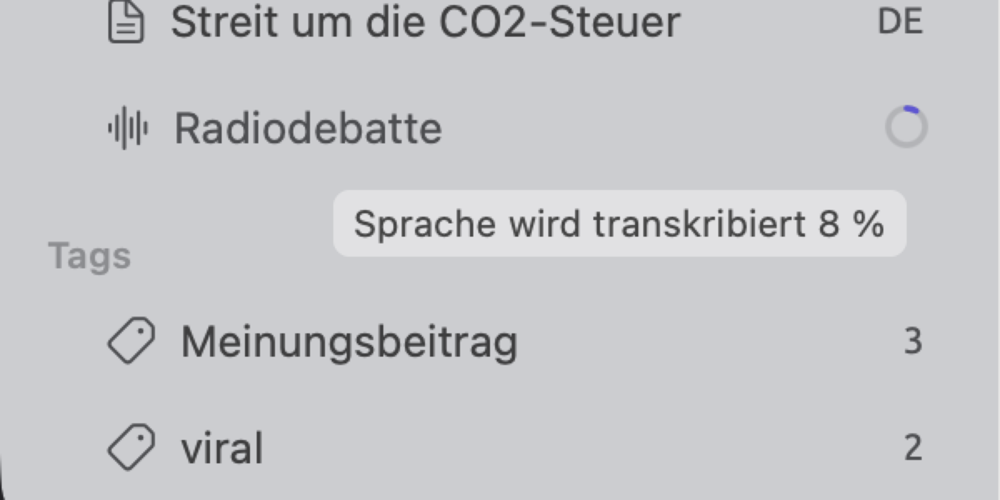
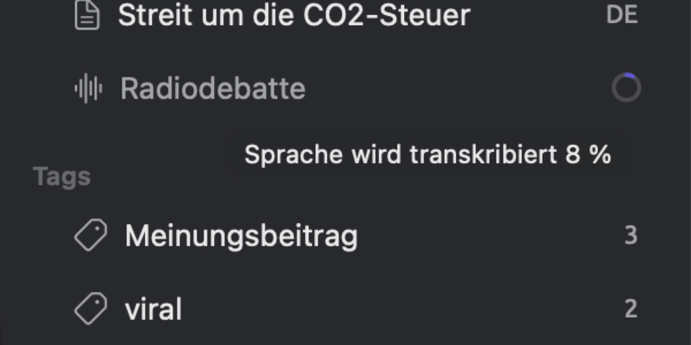
Importe laufen einer nach dem anderen, in der Reihenfolge, in der Sie auf Importieren klicken. Ein abgetipptes Dokument, das Sie nach einer langen Aufnahme bestätigen, wird also erst importiert, wenn die Transkription der Aufnahme abgeschlossen ist. Importieren Sie deshalb vor einer Aufnahme zuerst die abgetippten Dokumente, mit denen Sie in LemmaLoom sofort arbeiten möchten.
Wenn Sie LemmaLoom beenden, brechen der laufende Import und alle dahinter wartenden ab. Bereits importierte Dokumente bleiben wie gewohnt im Projekt, die noch wartenden müssen Sie später erneut importieren. Auch das Schließen des letzten Fensters von LemmaLoom gilt als Beenden. Lassen Sie begonnene Importe deshalb ohne Unterbrechung vollständig durchlaufen.
Tritt bei einem Import ein Fehler auf, bricht der Import vorzeitig ab. Ein Dialog mit dem Titel Etwas ist schiefgelaufen nennt dann das Problem, das den Vorgang verhindert hat. LemmaLoom sammelt solche Fehlermeldungen, bis alle übrigen Dialoge des aktuellen Stapels abgeschlossen sind, und zeigt sie dann zusammen an.
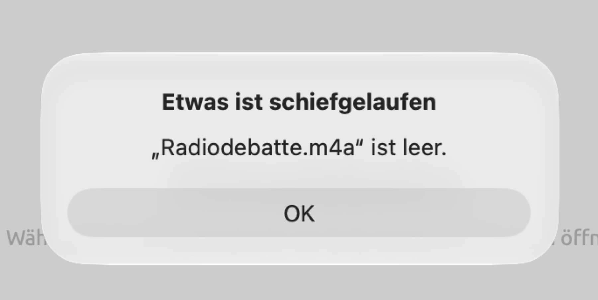
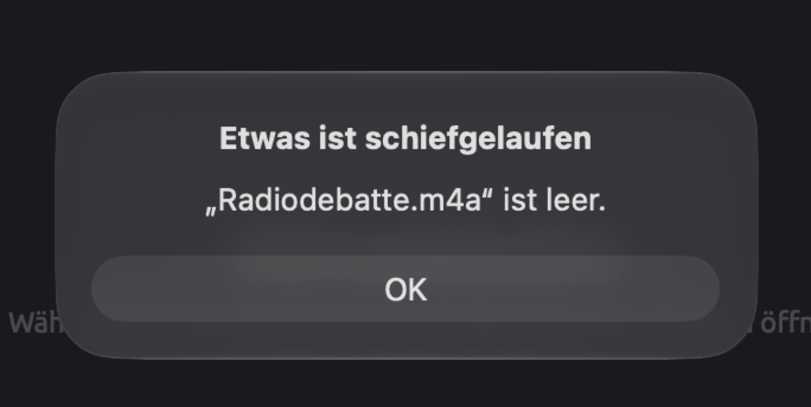
Der Dialog „Dokument importieren“
Alle Dokumente außer Webseiten werden mit dem Dialog Dokument importieren importiert. Für Webseiten gibt es den Dialog Aus dem Web importieren. PDF- und Webdokumente erhalten zusätzlich oben eine Quellvorschau. Die meisten Eigenschaften können Sie später in den Dokumenteigenschaften ändern; um das Dokument in eine andere Gruppe zu verschieben, klicken Sie in der Seitenleiste mit der rechten Maustaste auf das Dokument und wählen In Gruppe verschieben. Wenn Sie sich bei einer Eigenschaft nicht sicher sind, lassen Sie sie aus.
So enthält im Beispielprojekt „Klimadebatte“ jeder der elf Kommentartexte Angaben zu allen vier Attributen, die im Projekt definiert sind. Jedes Dokument hat ein Erscheinungsdatum und gehört entweder zur Gruppe „Print“ oder zur Gruppe „Online“. Hier ist „Bauern sind nicht der Feind“ das erste von sechs gemeinsam importierten Dokumenten. Seine Felder „Haltung“ und „Reichweite“ sind bereits ausgefüllt.
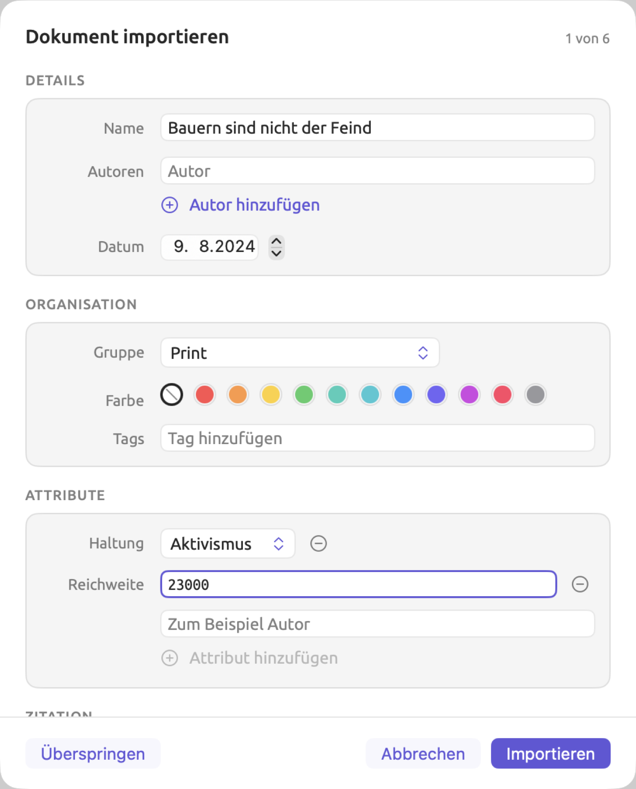
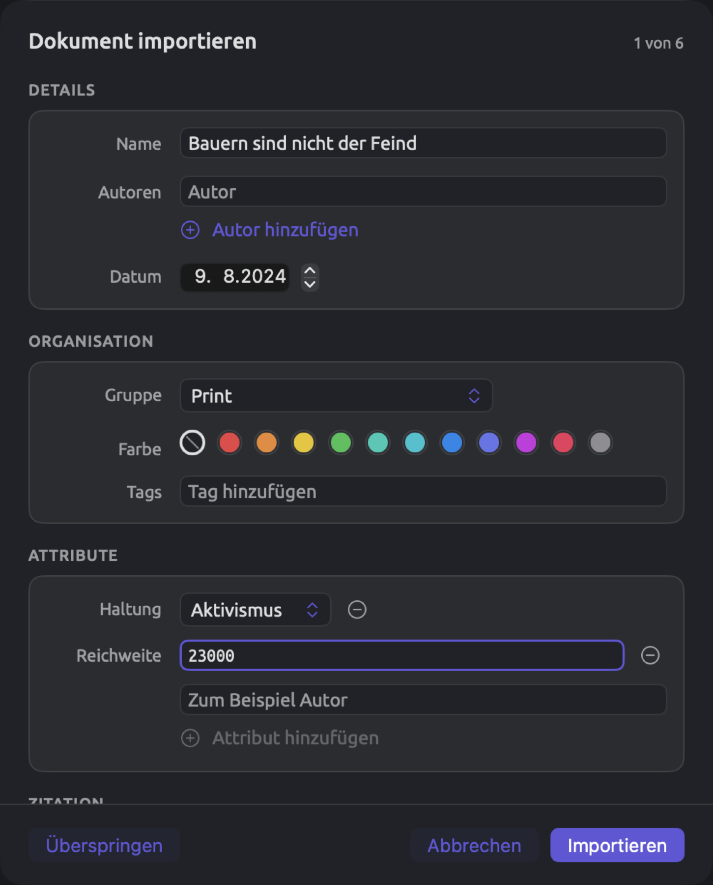
Details
Name beruht auf dem Dateinamen ohne Endung. Aus Uns läuft die Zeit davon.txt wird „Uns läuft die Zeit davon“. Der Name erscheint in der Seitenleiste, in Tabs und in jeder Ergebnistabelle. Bleibt das Feld Name leer, ist die Schaltfläche Importieren deaktiviert. Autoren enthält einen Eintrag pro Autor. Klicken Sie auf Autor hinzufügen, um weitere Autoren einzutragen.
Jedes Dokument hat ein Datum, das Sie auch abfragen und nach dem intelligente Sets auswählen können. Bei PDFs und Webseiten ermittelt LemmaLoom das Datum nach Möglichkeit automatisch. Bei Textdateien und Medien ist das anfängliche Datum das aktuelle Datum. Ein Datumsattribut wie „Erscheinungsdatum“ ist vom Datum getrennt. „Erscheinungsdatum“ tragen Sie selbst ein, zum Beispiel wenn das Dokument ein zweites Datum braucht.
Organisation
Gruppe legt das Dokument in eine der Gruppen des Projekts, etwa in „Print“. Nicht gruppiert lässt das Dokument auf der obersten Ebene des Abschnitts Dokumente. Farbe ändert die Tönung des Dokumentsymbols in der Seitenleiste.
Tags nimmt beliebig viele Tags auf. Geben Sie ein Tag ein und drücken Sie den Zeilenschalter (oder tippen Sie ein Komma). Sobald Sie zu tippen beginnen, schlägt LemmaLoom bereits verwendete Tags vor; sie stammen aus dem gemeinsamen Tag-Vokabular all Ihrer Projekte. Siehe Kapitel 8, Sets, Gruppen, Tags und Attribute.
Attribute
Hier erhält das Dokument die Werte seiner Attribute. Attribute sind Variablen, die Eigenschaften des ganzen Dokuments beschreiben. Beispiele sind „Haltung“ und „Reichweite“ eines Meinungsbeitrags.
- Geben Sie im Feld unten in diesem Abschnitt den Namen eines Attributs ein. Während Sie tippen, schlägt LemmaLoom Attributnamen aus diesem und Ihren anderen Projekten vor. Jeder Vorschlag zeigt seinen Typ.
- Hat das Projekt bereits ein Attribut dieses Namens, klicken Sie auf Attribut hinzufügen. Es erscheint eine Zeile dafür. Geben Sie dort den Wert ein oder wählen Sie ihn aus.
- Ist der Name neu, wählen Sie als Typ Text, Ganzzahl (eine ganze Zahl), Dezimalzahl, Boolescher Wert (ja oder nein), Datum oder Auswahl (eine aus einer festen Liste von Wahlmöglichkeiten). Geben Sie bei einer Auswahl außerdem die Wahlmöglichkeiten ein, eine pro Zeile. Klicken Sie auf Attribut hinzufügen und geben Sie den Wert in der neuen Zeile ein. Das Attribut selbst wird beim Import für das ganze Projekt angelegt.
Wählen Sie einen vorgeschlagenen Namen aus einem anderen Projekt, übernehmen Sie damit auch seinen Typ und seine Wahlmöglichkeiten. Um eine Zeile zu löschen, klicken Sie auf die Schaltfläche zum Entfernen am Ende der Zeile.
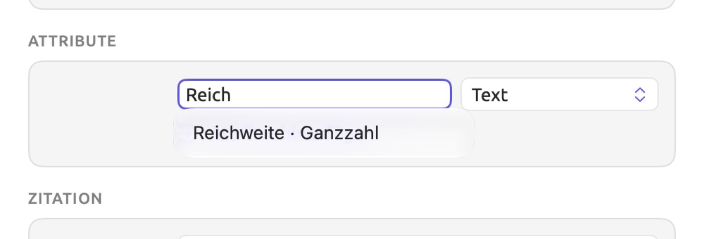
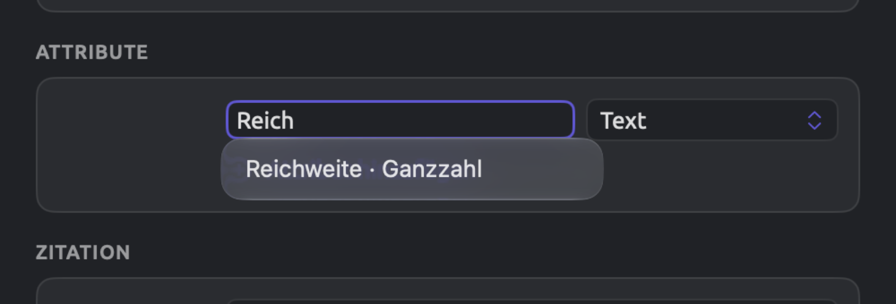
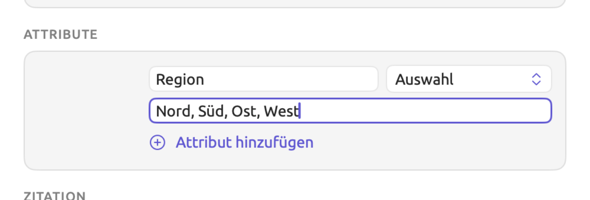
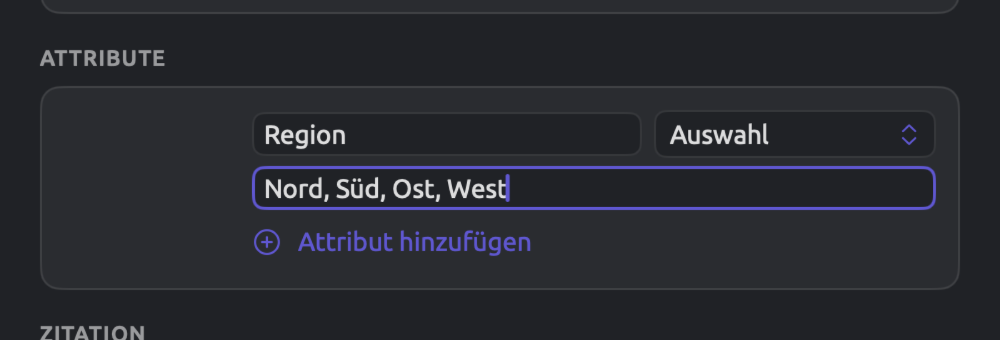
Der Dialog beginnt für jede Datei eines Stapels von vorn. Gruppe, Farbe, Tags, Attributwerte, Sprache, Analysatoren und Ausschlussmuster werden zurückgesetzt. Um mehreren Dokumenten gleichzeitig Attributwerte zuzuweisen, können Sie anschließend eine Tabelle importieren, wie in Attributwerte aus einer Tabelle importieren weiter unten in diesem Kapitel beschrieben.
Zitation
Ist die Quelle veröffentlicht, tragen Sie die bibliografischen Angaben in die Felder Verlag, Publikation, URL und DOI ein. Publikation enthält den Namen des Mediums, in dem die Quelle erschienen ist, etwa der Zeitschrift oder der Website. Bei PDFs und Webseiten füllt LemmaLoom manche Felder automatisch aus.
Indizierung
Der letzte Abschnitt enthält Sprache, Für die Grammatikanalyse indizieren, Analysatoren und Von der Indizierung ausschließen. Siehe Die Sprache wählen, Analysatoren und Indizierung und Text von der Indizierung ausschließen.
Die Sprache wählen
Sprache bestimmt, welche Grammatikanalyse für Ihre Dokumente durchgeführt wird. Sie können Englisch, Deutsch oder Chinesisch wählen oder Sprache auf Automatisch lassen. Mit Automatisch erkennt LemmaLoom die Sprache anhand der ersten 4.096 Zeichen des Dokuments (das sind mehrere hundert Wörter); bei einer Aufnahme stützt es sich auf die Transkription. Siehe Wie die Transkription funktioniert weiter unten in diesem Kapitel. Wenn Sie statt Automatisch Englisch, Deutsch oder Chinesisch wählen, überspringt LemmaLoom die Erkennung ganz.
Mit der Einstellung Automatisch kann zum Beispiel ein deutsches Dokument, das mit einer ausführlichen englischen Zusammenfassung beginnt, durchgehend als Englisch indiziert werden. Legen Sie die Sprache bei jedem Dokument, dessen Anfang sich vom Rest unterscheidet, von Hand fest.
Dokumente in anderen Sprachen als Englisch, Deutsch oder Chinesisch werden importiert, aber nicht indiziert. Ihren Indizierungsstatus sehen Sie in der Statusleiste der Leseansicht, wo dann etwa Keine Grammatikanalyse für Französisch steht. Sie können ein solches Dokument trotzdem ansehen und kodieren. Um eine falsche Erkennung zu korrigieren, stellen Sie in den Dokumenteigenschaften die richtige Sprache ein; LemmaLoom indiziert das Dokument dann neu.
Die Seitenleiste zeigt neben jedem Dokument seine Sprache als Kürzel aus zwei Buchstaben (etwa EN für Englisch, DE für Deutsch). Bewegen Sie den Mauszeiger auf ein Kürzel, um den vollen Namen der Sprache des Dokuments zu sehen.
Analysatoren und Indizierung
Für die Grammatikanalyse indizieren ist anfangs aktiviert. Wenn Sie Dokumente nur lesen und kodieren möchten, ohne Grammatikanalyse, können Sie das Markierungsfeld jedoch deaktivieren und die Indizierung aufschieben, bis Sie die Grammatikanalyse brauchen. Bei einem so hinzugefügten Dokument zeigt die Statusleiste der Leseansicht Indizierung ist aus. Um es zu indizieren, klicken Sie dort oder im Dialog Dokumenteigenschaften auf Jetzt indizieren.
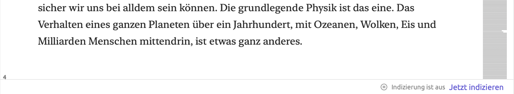
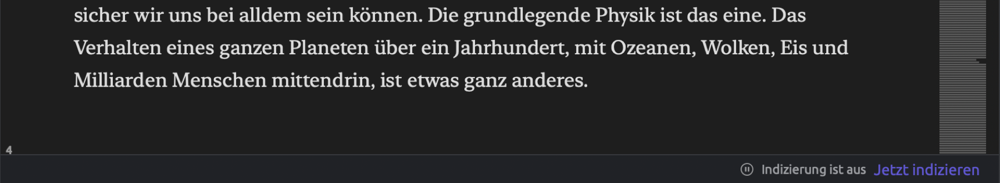
Analysatoren listet auf, was nach Abschluss der Indizierung eines Dokuments läuft. Kohäsion verfolgt, wie jeder Satz über Bezüge wie Pronomen und Wortwiederholungen an vorangehende Sätze anknüpft. Metadiskurs markiert Wörter in Rede und Schrift, mit denen Aussagen im Diskurs selbst kommentiert werden, etwa Heckenausdrücke, Verstärker und Konnektoren. Rhetorik schließlich untersucht das Passiv und andere rhetorische Mittel. Kapitel 6, Lenses und Kapitel 11, Der Grammatik-Inspektor machen die Ergebnisse dieser Analysatoren sichtbar. Eigene Analysatoren, die Sie unter Fenster ▸ Analysatoren schreiben, folgen in der Liste direkt danach. Siehe Kapitel 20, Eigene Analysatoren.
Steht Sprache auf Automatisch, bietet LemmaLoom die vollständige Liste der verfügbaren Analysatoren an. Wählen Sie eine bestimmte Sprache, zeigt die Liste nur die Analysatoren, die diese Sprache verarbeiten können. Anfangs ist jeder Analysator ausgewählt und läuft für das Dokument. Heben Sie die Auswahl eines Analysators auf, wird er für dieses Dokument übersprungen; in den Dokumenteigenschaften können Sie ihn später noch ausführen. Ist Für die Grammatikanalyse indizieren deaktiviert, ist die ganze Liste deaktiviert.
Text von der Indizierung ausschließen
Abgetippte Transkripte enthalten oft zusätzlichen Text, der über das in der Aufnahme Gesagte hinausgeht. Er kann viele Formen haben, etwa Zeitstempel in eckigen Klammern wie [00:12:31]. Oder es sind Sprecherkennzeichnungen wie Moderation: und Skeptiker: vor jedem Redebeitrag. Bleiben solche Kennzeichnungen stehen, erhöhen sie die Zahl der Wörter. Angenommen, in einem abgetippten Transkript der „Radiodebatte“ begänne jeder Redebeitrag mit Moderation:, Aktivistin: oder Skeptiker:. Dann wären Aktivistin, Skeptiker und Moderation die drei häufigsten Substantive dieses Transkripts. Das verzerrt Schlüsselwortlisten und Wortskizzen. Wenn LemmaLoom selbst Transkripte aus Aufnahmen erstellt, hält es die Sprecher in Form von Codes und Transkriptsegmenten fest. Siehe Sprecher weiter unten in diesem Kapitel.
Um Zeitstempel und Kennzeichnungen aus der Grammatikanalyse herauszuhalten, verwenden Sie Von der Indizierung ausschließen. Ausgeschlossener Text bleibt im Dokument, wo Sie ihn lesen und kodieren können, wird aber nicht indiziert und damit auch nicht grammatisch analysiert.
Was ausgeschlossen werden soll, legen Sie mit einem regulären Ausdruck fest. Reguläre Ausdrücke sind Muster, die auf ganze Familien von Zeichenfolgen passen. Wenn Sie noch nie einen geschrieben haben, beginnen Sie mit den folgenden Grundbausteinen.
| Baustein | Passt auf |
|---|---|
\d | eine beliebige Ziffer |
+ hinter etwas | eines oder mehrere davon hintereinander |
\[ und \] | eine öffnende und eine schließende eckige Klammer (der umgekehrte Schrägstrich macht sie zu gewöhnlichen Zeichen) |
\. | einen Punkt (ein bloßer . passt auf jedes Zeichen) |
\S | ein beliebiges Zeichen außer einem Leerzeichen |
? hinter etwas | das Vorangehende oder nichts |
Stück für Stück gelesen, beginnt das Muster \[\d+:\d+:\d+\] mit einer öffnenden Klammer. Darauf folgen drei durch Doppelpunkte getrennte Gruppen aus einer oder mehreren Ziffern. Am Ende steht eine schließende Klammer. Das Muster passt also etwa auf [00:12:31] oder [1:05:09]. Etwas mit nur einem Doppelpunkt wie [12:31] erfasst es dagegen nicht.
Innerhalb runder Klammern trennt der senkrechte Strich alternative Möglichkeiten. (Moderation|Aktivistin|Skeptiker): steht für Moderation:, Aktivistin: und Skeptiker:. Beachten Sie, dass Muster Groß- und Kleinschreibung unterscheiden; moderation: passt deshalb nicht auf das obige Muster. Wenn Sie Groß- und Kleinschreibung ignorieren möchten, stellen Sie dem Muster (?i) voran. Für sich allein steht das Zirkumflexzeichen ^ für den Anfang des gesamten Textes. Das Muster (?m)^(Moderation|Aktivistin|Skeptiker): steht für Moderation:, Aktivistin: und Skeptiker: nur dann, wenn sie am Anfang einer Zeile stehen.
So fügen Sie ein Muster hinzu:
- Geben Sie es in das Feld unter Von der Indizierung ausschließen ein. Die Zeile unter dem Feld zeigt ein Beispiel für Text, auf den es passt, Gültiges Muster, wenn es kein Beispiel zeigen kann, oder Kein gültiges Muster.
- Klicken Sie auf Hinzufügen oder drücken Sie den Zeilenschalter.
Neben Hinzufügen befindet sich das Menü Voreinstellungen. Es bietet fertige Muster:
| Voreinstellung | Muster |
|---|---|
| Zeitstempel [hh:mm:ss] | \[\d+:\d+:\d+\] |
| Zeitstempel [mm:ss] | \[\d+:\d+\] |
| Sprecherkennzeichnungen | Sprecher \d+: |
| Webadressen | https?://[^\s\p{Han}\u3000-\u303F\uFF00-\uFFEF]+ |
| E-Mail-Adressen | [^\s\p{Han}\u3000-\u303F\uFF00-\uFFEF]+@[^\s\p{Han}\u3000-\u303F\uFF00-\uFFEF]+\.[^\s\p{Han}\u3000-\u303F\uFF00-\uFFEF]+ |
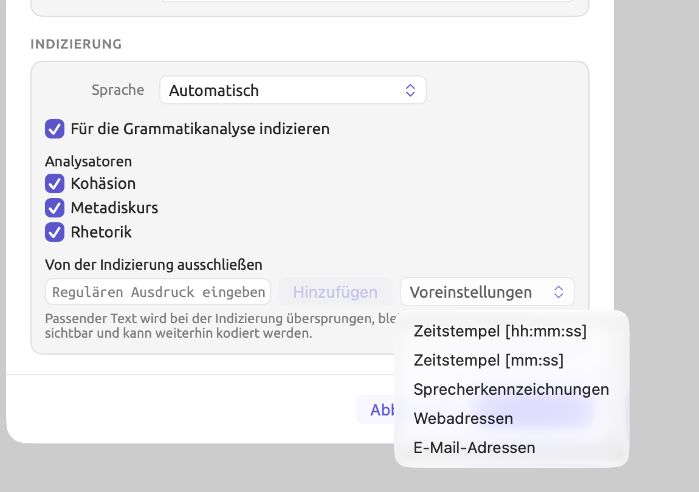
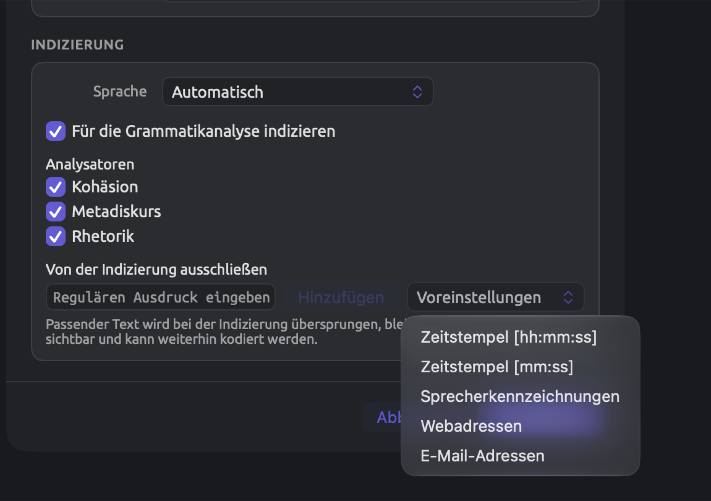
Für Muster, die Ihnen häufig begegnen, können Sie eigene Voreinstellungen anlegen. Öffnen Sie in den Einstellungen den Bereich Allgemein. Klicken Sie unter Ausschluss-Voreinstellungen auf Voreinstellung hinzufügen, geben Sie der neuen Voreinstellung einen Namen und tragen Sie ihr Muster ein. Ihre Voreinstellungen erscheinen im Menü Voreinstellungen nach denen von LemmaLoom.

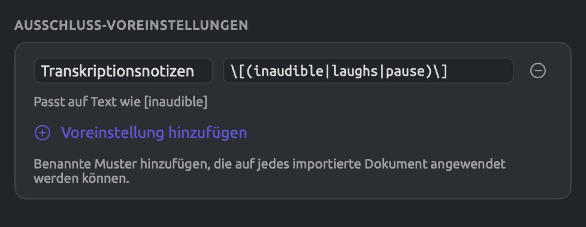
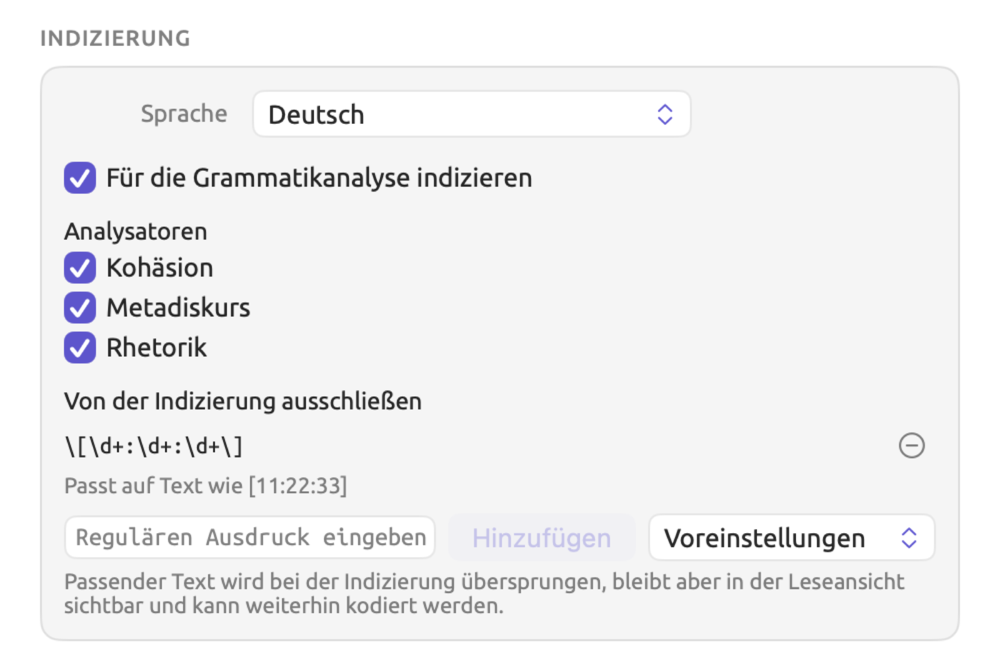
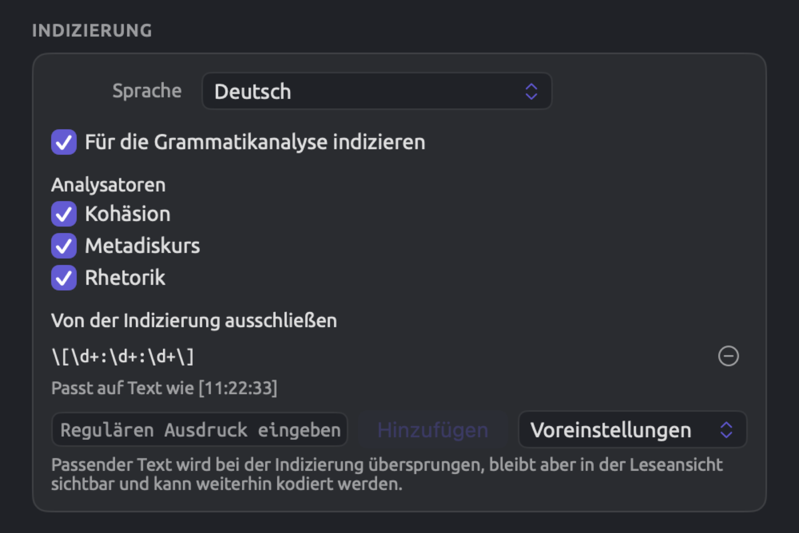
Die Muster werden mit dem Dokument gespeichert. Sie können sie später im Dialog Dokumenteigenschaften bearbeiten. Nach einer Änderung indiziert LemmaLoom das Dokument neu.
Textdateien
Alle Textdateien mit Endungen wie .txt werden unverändert übernommen. Andere reine Textdateien, etwa Markdown (.md), kommen auf die gleiche Weise ins Projekt, samt Sonderzeichen wie # und *.
LemmaLoom liest Textdateien als UTF-8. In einer Textdatei mit einer älteren Kodierung als UTF-8, etwa Windows Latin 1, können Umlaute und Akzentbuchstaben durch das Zeichen � ersetzt sein. Sichern Sie die Datei in diesem Fall in einem Texteditor erneut als UTF-8 und importieren Sie sie noch einmal.
Dokumente im Format .docx oder .doc müssen Sie vor dem Import aus Word exportieren. Exportieren Sie sie als reinen Text in UTF-8 oder als PDF, und wählen Sie nach Möglichkeit reinen Text, denn dabei bleiben Ihre Absätze erhalten. Ein PDF speichert nur Angaben zu den einzelnen Textzeilen einer Seite; LemmaLoom muss die ursprünglichen Absätze deshalb aus den importierten Daten wieder aufbauen. Siehe Wie der Text gewonnen wird weiter unten in diesem Kapitel.
RTF- und HTML-Dateien können Sie im Dateidialog ebenfalls auswählen, da auch sie Textdateien sind. Sie behalten beim Import alle ihre Formatierungscodes. Exportieren Sie ein RTF-Dokument deshalb als reinen Text, bevor Sie es in LemmaLoom importieren. Webseiten importieren Sie mit Ablage ▸ Importieren ▸ Webseiten.
Die Absätze in Textdateien erkennt LemmaLoom selbst. Wo die Absätze liegen, ist wichtig für die Absatznummern in der Leseansicht und für Abfragen mit Absätze als Einheit. Zuerst prüft LemmaLoom, ob die Datei Leerzeilen enthält. Gibt es mindestens eine Leerzeile, trennen nur Leerzeilen die Absätze. Einfache Zeilenumbrüche in Dokumenten mit Leerzeilen liegen dann innerhalb eines Absatzes. Gibt es keine einzige Leerzeile, ist jede Zeile ein eigener Absatz; ein Transkript, das mit einer Zeile pro Redebeitrag getippt wurde, erhält also einen Absatz pro Redebeitrag.
PDF-Dokumente
PDFs können echten Text, gescannte Seitenbilder oder eine Mischung aus beidem enthalten. Eine vorhandene Textebene liest LemmaLoom direkt aus, und jede Seite ohne Textebene durchläuft eine Texterkennung. Das Projekt behält dann nur den Text.
Die Quellvorschau eines PDFs
Beim Import eines PDFs prüft LemmaLoom das Dokument, bevor Sie es importieren können. Währenddessen zeigt die Quellvorschau PDF wird gelesen, und Importieren bleibt deaktiviert. Nach der Prüfung nennt die fertige Vorschau den Dateinamen sowie die Gesamtzahl der Seiten und die Zahl der Wörter in der Textebene. Für „Hitzebericht 2024“ lautet die Angabe 6 Seiten · 470 Wörter. Seiten ohne brauchbare Textebene werden gesondert gezählt (etwa 2 Seiten benötigen Texterkennung). Darunter folgen die ersten Zeilen des Textes.
Prüfen Sie anhand der ersten Zeilen, ob Sie die richtige Datei gewählt haben und ob dort lesbarer Text steht. Die Wortzahl beruht auf den Seiten mit Textebene; beim „Hitzebericht 2024“ fehlen in ihr deshalb die beiden Seiten, die Texterkennung benötigen. Beim eigentlichen Import werden die Wörter auf diesen Seiten jedoch erkannt und in das Dokument aufgenommen.
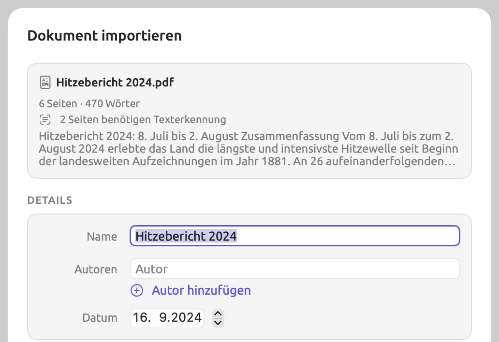
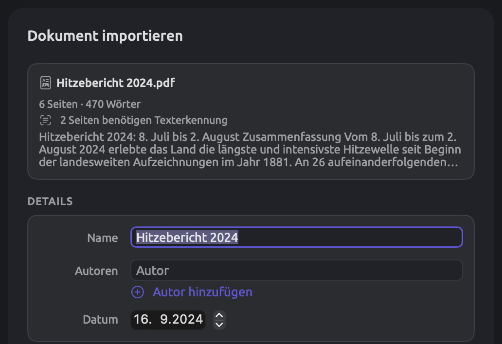
LemmaLoom übernimmt Angaben aus Ihrem PDF in den Dialog. Name erhält den Titel aus dem Titelfeld des PDFs, sofern es sich nicht um einen Platzhaltertitel handelt und Sie den Namen nicht bereits geändert haben. Als Platzhalter gelten „Untitled“, jeder Dateiname mit der Endung .docx und jeder Titel, der mit „Microsoft Word -“ beginnt. Autoren übernimmt die Namen aus dem Autorenfeld des PDFs und trennt mehrere Namen an Semikolons. Datum übernimmt das Erstellungsdatum des PDFs. DOI übernimmt den ersten Digital Object Identifier, der im Feld „Thema“ des PDFs oder auf den ersten beiden Seiten mit Text steht.
Wie der Text gewonnen wird
Wenn Sie auf Importieren klicken, verarbeitet LemmaLoom das PDF Seite für Seite. Die Zeile in der Seitenleiste und das Fenster Aktivität zeigen dabei PDF wird gelesen mit einer Prozentangabe.
Bevor eine Seite verarbeitet wird, prüft LemmaLoom ihre Textebene. Die Prüfung ist bestanden, wenn die Seite mindestens 20 Buchstaben enthält und im Durchschnitt auf 3 Buchstaben weniger als 1 unlesbares Zeichen kommt. Unlesbar ist ein Zeichen, das beim Kopieren als Kästchen oder � erscheint. Besteht eine Seite die Prüfung, wird ihr Text Zeile für Zeile übernommen. Alles andere gilt als Scan. Ein Scan wird für die Texterkennung in Bilder umgewandelt, und die Texterkennung macht oft Fehler, wenn der Scan von geringer Qualität ist oder viele Tabellen enthält. Vergleichen Sie das Ergebnis mit dem Original.
Ein PDF kennt nur Zeilen. LemmaLoom baut die Absätze aus der Zeilenstruktur wieder auf. Ein größerer senkrechter Abstand zwischen zwei Zeilen markiert den Beginn eines neuen Absatzes. Auch eine eingerückte erste Zeile und eine kurze Zeile, die einen Satz beendet, markieren den Beginn eines neuen Absatzes. Beginnt die nächste Zeile mit einem Kleinbuchstaben, wird ein Trennstrich am Ende der vorigen Zeile entfernt. Aus „Infra-“ und „struktur“ wird „Infrastruktur“. Ebenso verlieren Zusammensetzungen, die genau an ihrem eigenen Bindestrich umbrochen sind, diesen Bindestrich; aus „Herz-“ und „und Lungenerkrankungen“ wird „Herzund Lungenerkrankungen“. Achten Sie auf solche Fälle. Ein Absatz kann außerdem auf der folgenden Seite weiterlaufen, wenn diese mit einem Kleinbuchstaben beginnt und die vorige Seite ohne schließendes Satzzeichen endet. In chinesischem Text werden zusammengefügte Zeilen ohne Leerzeichen verbunden.
Seitenzahlen sowie Kopf- und Fußzeilen werden erkannt und aus den Dokumenten entfernt. Kopf- und Fußzeilen sind Titel, die im ganzen Dokument oben oder unten auf jeder Seite wiederkehren. Kurze Absätze oben oder unten auf einer Seite kommen als Kopf- oder Fußzeile in Frage. Als solche gelten sie, wenn derselbe Text auf mindestens 40 Prozent der Seiten wiederkehrt. Ziffern sowie Groß- und Kleinschreibung spielen beim Vergleich keine Rolle. „Hitzebericht 2024, Seite 3“ und „Hitzebericht 2024, Seite 4“ gelten deshalb als derselbe Text. Bei insgesamt sechs Seiten hat der „Hitzebericht 2024“ eine Kopfzeile, wenn derselbe Text auf mindestens 3 der 6 Seiten vorkommt. LemmaLoom rechnet 40 Prozent von 6, also 2,4, und rundet auf 3 Seiten auf. Alleinstehende Seitenzahlen („12“, „iv“, „Page 12“, „Seite 12“) werden oben und unten auf jeder Seite entfernt.
Der Text folgt der Reihenfolge, die das PDF vorgibt. Auf Seiten mit mehreren Spalten und in Tabellen können Zeilen deshalb in falscher Reihenfolge zueinander stehen. Auch Fußnoten und Bildunterschriften können die Reihenfolge auf diese Weise stören. Prüfen Sie das Ergebnis auf Unstimmigkeiten in der Lesereihenfolge und korrigieren Sie diese, wo nötig. Eine Anleitung finden Sie in Kapitel 5, Lesen und Bearbeiten.
Webseiten
Das importierte Dokument enthält nur den Artikel der Webseite, nicht die Navigationselemente, Werbung oder Kommentare um ihn herum.
Eine Webseite importieren
„Streit um die CO2-Steuer“ ist ein Nachrichtenartikel in „Klimadebatte“, der aus dem Web importiert wurde. Seine Webadresse ist unter URL gespeichert.
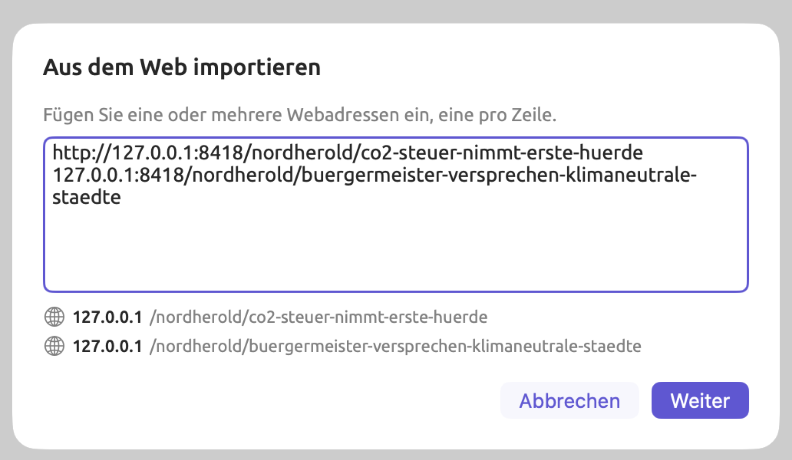
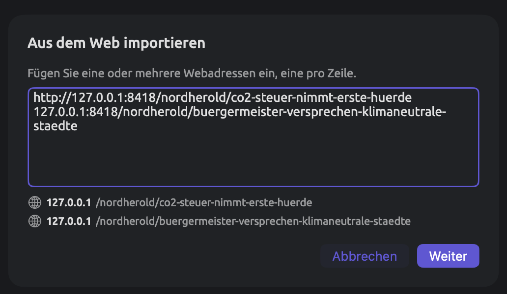
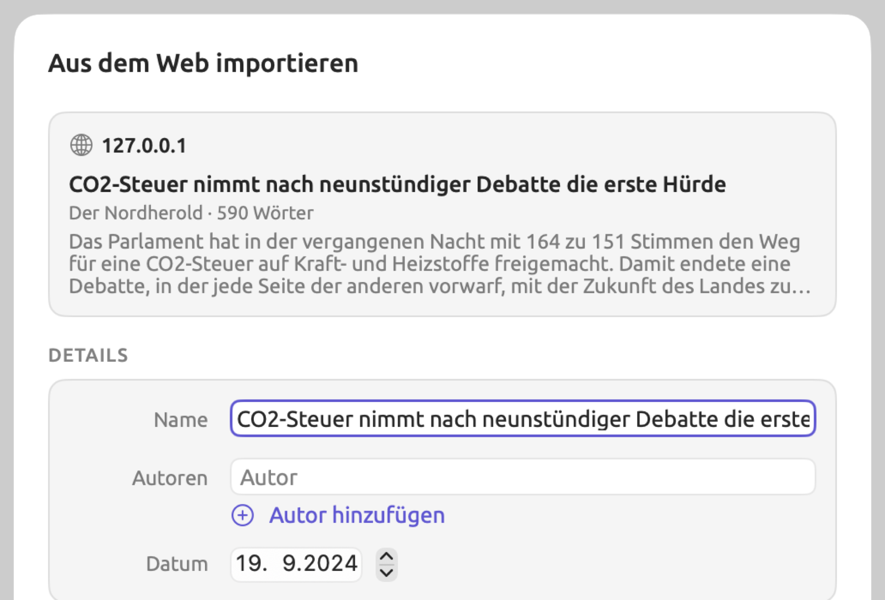
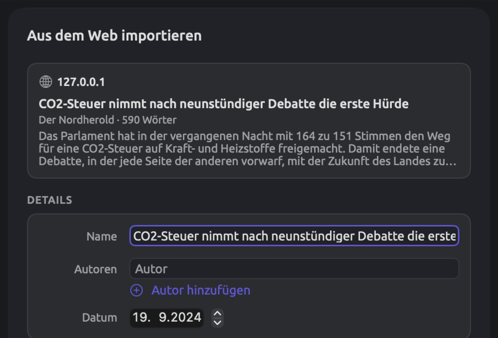
So importieren Sie eine Webseite:
- Wählen Sie in der Seitenleiste das Projekt aus.
- Wählen Sie Ablage ▸ Importieren ▸ Webseiten (⌥⇧⌘I).
- Fügen Sie im Dialog Aus dem Web importieren eine oder mehrere Webadressen ein, eine pro Zeile. Unter dem Feld listet LemmaLoom die Adressen auf, die es erkannt hat. Wo
https://fehlt, ergänzt es diese Angabe, und eine mehrfach eingegebene Adresse führt es nur einmal auf. - Klicken Sie auf Weiter.
- Für die erste Adresse öffnet sich ein zweiter Dialog Aus dem Web importieren. Während LemmaLoom die Seite lädt und den Artikel extrahiert, zeigt die Quellvorschau Seite wird geladen und dann Artikel wird gelesen.
- Sobald die Vorschau den Artikel zeigt, prüfen Sie Titel und Website. Prüfen Sie auch die Wortzahl und die ersten Zeilen. Füllen Sie dann den Rest des Dialogs aus.
- Klicken Sie auf Importieren. Haben Sie mehrere Adressen eingegeben, öffnet sich der Dialog erneut für die nächste. Er hat Überspringen und einen Zähler, wie bei Dateien.
Wie LemmaLoom eine Seite liest
Beim Import einer Webseite lädt LemmaLoom die Seite in einer privaten Browsersitzung. LemmaLoom scrollt einmal ans Ende der Seite und wartet kurz, um auch Text zu erfassen, der erst beim Scrollen geladen wird. Danach extrahiert LemmaLoom den Artikel.
Im Dokument des Artikels erscheint der Text in Lesereihenfolge. Bilder, Videos, Formulare und eingebettete Inhalte werden entfernt. Jede Überschrift, jeder Absatz, jeder Listeneintrag und jede Tabellenzelle wird zu einem Absatz im Dokument. Ein erster Absatz, der nur den Titel wiederholt, wird entfernt.
Die Quellvorschau zeigt Metadaten wie die Wortzahl und den Namen der Website. Sie enthält den Titel des Artikels, gefolgt von einer Beschreibung des Artikels, sofern die Seite selbst eine mitliefert. Fehlt eine solche Zusammenfassung, steht dort stattdessen der Anfang des Textes.
Der Importdialog füllt nur fehlende Felder mit den Daten aus, die die Seite bietet. Name erhält den Titel des Artikels. Autoren erhält die Namen der Personen, die auf der Seite als Autor genannt sind. Publikation erhält den Namen der Website und URL den Link der Seite (oder die Adresse, die die Seite selbst bevorzugt). Datum ist hier die Ausnahme; nennt die Seite ausdrücklich ein Erscheinungsdatum, wird es zum Datum, gleich, was Sie vorher eingetragen hatten.
Audio und Video
LemmaLoom akzeptiert Aufnahmen in jedem Format, das Ihr Mac dekodieren kann. Bei Audio sind das zum Beispiel MP3, M4A, WAV und AIFF, bei Video MP4 und MOV. LemmaLoom transkribiert das Gesprochene in der Aufnahme und weist die Sprechercodes automatisch zu. Außerdem behält es eine Kopie der Datei, damit Sie die Aufnahme beim Lesen des Transkripts jederzeit abspielen können.
Wenn Sie ein vorhandenes Transkript mit seiner Aufnahme verknüpfen möchten, können Sie beide zusammen als Teil eines REFI-QDA-Projekts importieren. Mehr dazu finden Sie in Ein REFI-QDA-Projekt importieren in Kapitel 22, Austausch und Export. Für sich allein importiert, ist ein Transkript eine Textdatei ohne Wiedergabe.
Eine Aufnahme importieren
Die „Radiodebatte“ aus „Klimadebatte“ ist eine importierte Audiodatei mit drei Stimmen, nämlich der Moderation, einer Aktivistin und einem Skeptiker. Ihr Transkript ist mit der Aufnahme verknüpft, sodass Sie jede Passage beim Lesen abspielen können. Die Sprecher sind als Codes festgehalten.
So importieren Sie eine Audio- oder Videodatei:
- Wählen Sie in der Seitenleiste das Projekt aus.
- Wählen Sie Ablage ▸ Importieren ▸ Dokumente (⇧⌘I).
- Wählen Sie die Aufnahme aus und klicken Sie auf Öffnen.
- Prüfen Sie im Dialog Dokument importieren den Namen und tragen Sie die Angaben ein. Lassen Sie Sprache auf Automatisch.
- Klicken Sie auf Importieren.
Für die Aufnahme erscheint eine Zeile am Ende des Abschnitts Dokumente; eine Wellenform steht für eine Audiodatei, ein Filmstreifen für ein Video. Wenn Sie den Mauszeiger auf die Zeile halten, zeigt ein Tooltip den gerade laufenden Schritt. Sie können auch im Fenster Aktivität nachsehen.
| Schritt | Was geschieht |
|---|---|
| Wird vorbereitet | LemmaLoom kopiert die Datei in seine Bibliothek und ermittelt ihre Länge. |
| Audio wird extrahiert | Die Tonspur wird gelesen und für die Transkription vorbereitet. |
| Sprachmodell wird geladen | Wenn Apple-Spracherkennung eine Sprache zum ersten Mal transkribiert, wird ihr Sprachmodell geladen. Eine Prozentangabe zeigt den Fortschritt. |
| Sprache wird transkribiert | Das Gesprochene wird aufgeschrieben. Eine Prozentangabe zeigt den Fortschritt. |
| Sprecher werden identifiziert | Die Stimmen werden unterschieden, und jeder Satz wird einem Sprecher zugeordnet. |
Sind alle Schritte abgeschlossen, tritt das neu erzeugte Dokument an die Stelle der Zeile, und die Indizierung beginnt. Wie lange die Transkription dauert, hängt von Ihrem Gerät ab; importieren Sie zuerst eine einzelne Datei, um einen ungefähren Eindruck zu bekommen, bevor Sie viele Dateien importieren.
Aufnahmen brauchen eine Audiospur. Dateien ohne Audiospur lassen sich nicht importieren; stattdessen erscheint die Meldung Die Datei enthält keine Audiospur zum Transkribieren. Bei leeren Dateien nennt die Meldung die Datei, etwa „Radiodebatte.m4a“ ist leer.
Wie die Transkription funktioniert
LemmaLoom kann Sprache auf Englisch, Deutsch und Chinesisch transkribieren. Das Transkriptionsmodell hört die ersten 30 Sekunden an, um die Sprache Ihrer Aufnahme zu bestimmen, und transkribiert dann alles in dieser einen Sprache.
Chinesische Transkriptionen erscheinen in Kurzzeichen.
Es stehen drei Modelle zur Auswahl. Um das Transkriptionsmodell zu wechseln, wählen Sie in den Einstellungen im Bereich Allgemein unter Transkription ein Modell. Standardmäßig ist Apple-Spracherkennung gewählt, das schnellste Modell. Whisper Large v3 Turbo ist etwas schneller als Whisper Large v3, bei schwierigen Dateien aber möglicherweise ein wenig ungenauer. Chinesische Aufnahmen werden immer mit Whisper transkribiert, auch wenn Apple-Spracherkennung gewählt ist. Ein Wechsel des Modells wirkt sich nur auf künftige Transkriptionen aus.
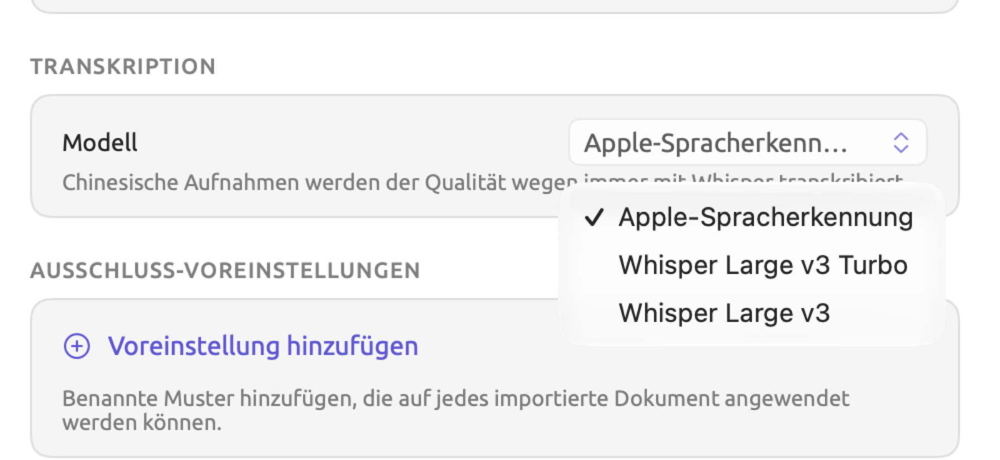
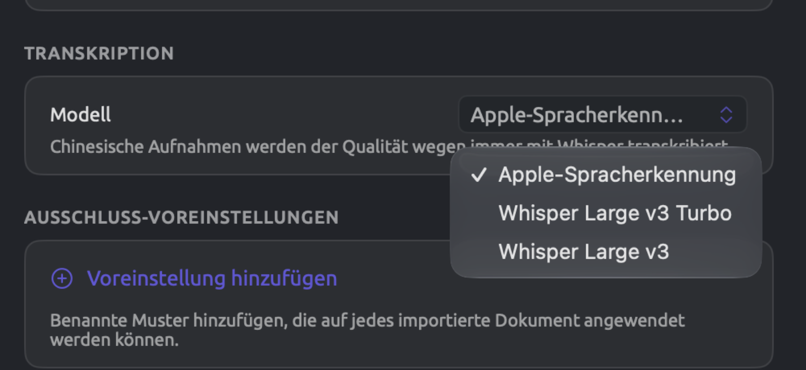
Namen, Fachbegriffe, Dialekt, gleichzeitiges Sprechen mehrerer Stimmen und Hintergrundgeräusche führen bei der Spracherkennung am häufigsten zu Fehlern. Bevor Sie mit dem Kodieren beginnen, lesen Sie das Transkript beim Anhören der Aufnahme durch und korrigieren Sie Fehler. Siehe Kapitel 5, Lesen und Bearbeiten. Beim Bearbeiten passen sich Ihre Kodierungen, Transkriptsegmente und weiteren Annotationen Ihren Änderungen an.
Sprecher
Nachdem die Transkripte Ihrer Audio- oder Videodateien erstellt sind, erkennt LemmaLoom die Stimmen und kodiert jeden Satz danach, wer ihn spricht. Sobald eine zweite, dritte oder weitere Stimme erkannt wird, werden die Sätze ihren Stimmen zugeordnet, und die Sprecher erhalten die Bezeichnungen „Sprecher 1“, „Sprecher 2“ und so weiter, in der Reihenfolge, in der sie im Gespräch zum ersten Mal sprechen.
LemmaLoom legt automatisch einen Code „Sprecher“ an, mit einem Untercode für jede Stimme, der auf deren Redebeiträge angewendet wird. Ein Redebeitrag ist eine Folge von Sätzen, die eine einzelne Person ohne Unterbrechung spricht. Jeder Untercode erhält eine eigene Farbe und wird auf jeden Redebeitrag seines Sprechers angewendet. Diese Codes gehören allein zu einem Dokument. Siehe Kapitel 7, Kodieren.
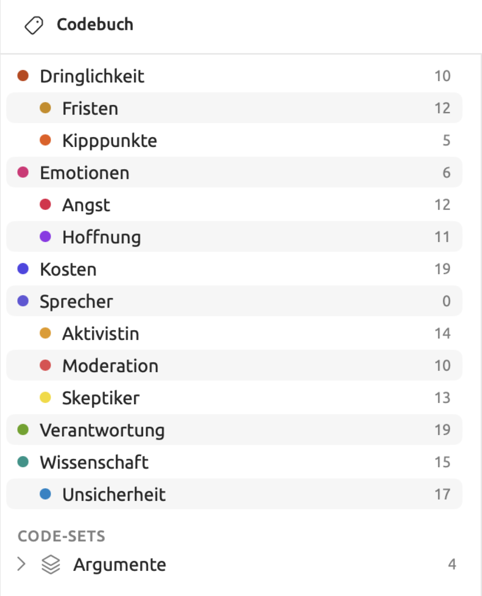
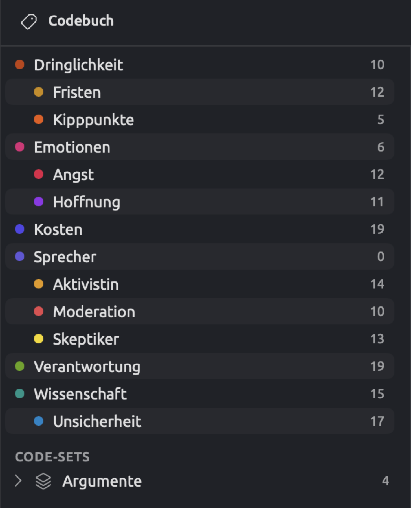
Auch das folgende Beispiel verwendet die „Radiodebatte“. Darin spricht zuerst die Moderation, dann die Aktivistin, dann der Skeptiker. Importieren Sie eine Datei, in der zuerst die Moderation, dann die Aktivistin und danach der Skeptiker spricht, steht Ihr Code „Sprecher 1“ für die Moderation, „Sprecher 2“ für die Aktivistin und „Sprecher 3“ für den Skeptiker. Anschließend würden Sie die drei Codes im Codebuch in „Moderation“, „Aktivistin“ und „Skeptiker“ umbenennen. Im Beispielprojekt haben die Sprecher der „Radiodebatte“ in ihren Codes und Transkriptsegmenten bereits Namen.
Die Sprechererkennung hat nur die Stimme selbst als Anhaltspunkt. Ähnlich klingende Stimmen und kurze Einwürfe können sie in die Irre führen. Auch gleichzeitiges Sprechen und Hintergrundgeräusche können sie stören. Gelegentlich teilt die Erkennung eine Stimme auf zwei verschiedene Sprecher auf. Vergleichen Sie Ihre Sprechercodes mit der Aufnahme. Kodieren Sie jeden Abschnitt, der dem falschen Sprecher zugeordnet ist, neu. Ist eine Stimme auf zwei Sprecher aufgeteilt, führen Sie die Sprechercodes wieder zusammen. Wird insgesamt nur eine Stimme erkannt, werden überhaupt keine Sprecher und keine Sprechercodes hinzugefügt.
Transkriptsegmente
Transkripte bestehen aus Segmenten, meist einem pro Satz. Jedes Segment enthält Anfangszeit und Endzeit, und wenn mehr als eine Stimme erkannt wird, auch den Sprecher. Der Text Ihres Transkripts ist nach diesen Segmenten gegliedert. Gehören zwei aufeinanderfolgende Sätze zum selben Sprecher, bleiben sie im selben Absatz. Wechselt dagegen der Sprecher oder entsteht eine Pause von mehr als 1,5 Sekunden, beginnt ein neuer Absatz.
Segmente verbinden den Text mit der Aufnahme. Sie teilen dem Player mit, welcher Teil des Transkripts gerade abgespielt wird. Außerdem können Sie über sie direkt zu jeder Stelle im Transkript springen. Abfragen können über die Einheit Redebeiträge mit Segmenten arbeiten. Siehe Kapitel 15, Eine Abfrage erstellen. Die Einheit Redebeiträge enthält einen Eintrag pro Segment. Ein Redebeitrag aus fünf Sätzen ergibt also fünf Einträge. Die Einträge haben die Felder Sprecher:in, Anfang, Ende und Dauer.
Aufnahmen abspielen
Öffnen Sie das Dokument einer Aufnahme, erscheint die Wiedergabeleiste direkt über Ihrem Text, wie in Kapitel 5, Lesen und Bearbeiten gezeigt. Die Wiedergabeleiste enthält die Bedienelemente zum Abspielen der Aufnahme, die Zeitpositionen und den Sprecher der Passage, die Sie gerade hören. Bei indizierten Dokumenten setzt ein Klick auf ein Wort den Player an den Anfang des Segments, zu dem dieses Wort gehört. Solange ein Dokument indiziert wird, was nach einer Bearbeitung erneut geschieht, bewegen Sie sich im Player nur mit dem Regler.
Rechts neben der Wiedergabetaste schaltet die Schaltfläche Mit dem Audio scrollen das Scrollen während der Wiedergabe ein. Während Sie eine Aufnahme im Dokument abspielen, zeigt die Leseansicht die gerade abgespielte Passage und hält sie sichtbar. Die Schaltfläche ist anfangs ausgeschaltet. Einmal eingeschaltet, bleibt sie für jede Aufnahme eingeschaltet, bis Sie sie von Hand ausschalten. Passagen, denen die Leseansicht beim Abspielen folgt, können als Spotlight (Standard), Volle Fläche oder Hervorheben erscheinen. Das Aussehen wählen Sie in den Einstellungen im Bereich Leseansicht unter Audiowiedergabe.
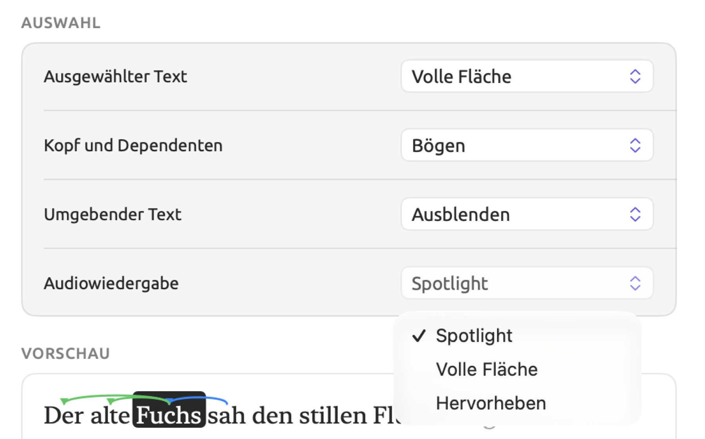
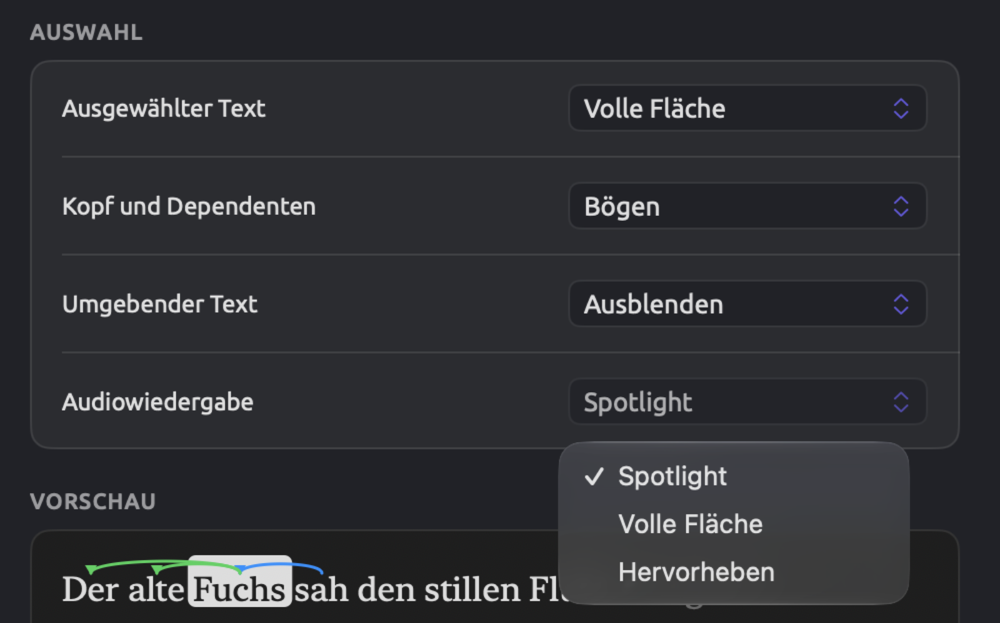
Bei Videos erscheint das Bild über dem Text. Mit der Trennlinie darunter ändern Sie die Größe des Videobereichs. Die Schaltfläche mit der Pfeilspitze klappt den Player auf seine Bedienelemente zusammen. Die Schaltfläche für die Videoposition daneben wechselt zwischen der Wiedergabe über dem Text und der Wiedergabe links neben dem Text.
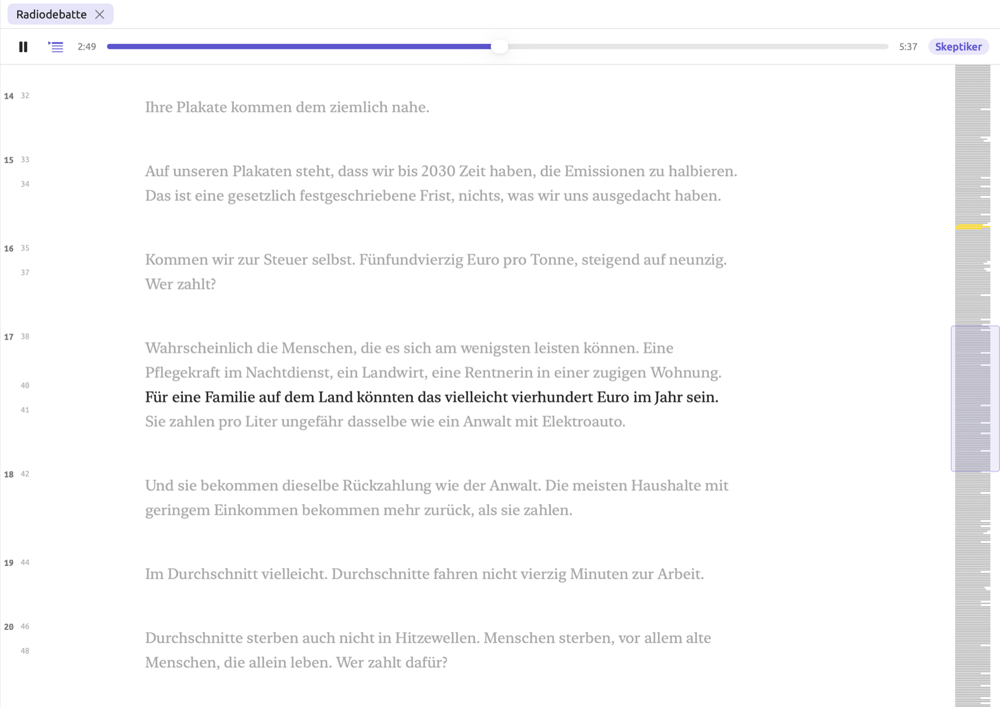
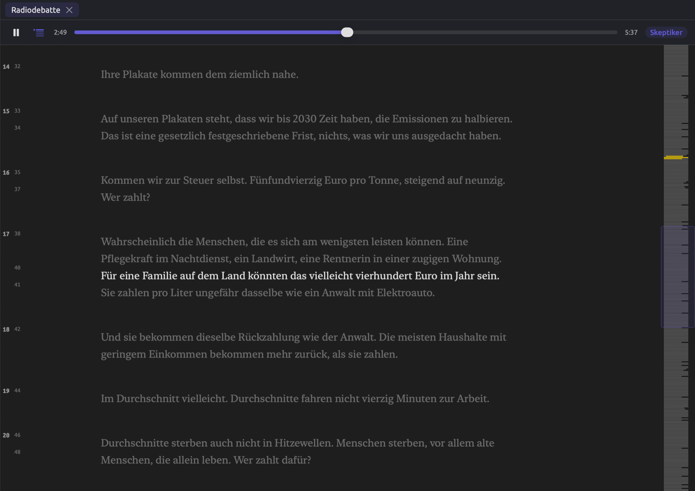
Wo Aufnahmen gespeichert sind
Alle importierten Aufnahmen werden in die Bibliothek kopiert und von dort abgespielt. Mehr zur Bibliothek finden Sie in Kapitel 2, Erste Schritte. Nach Abschluss des Imports können Sie die Originaldatei beliebig verschieben oder löschen. Wenn Sie Ihr Projekt als LemmaLoom-Archiv exportieren, enthält das exportierte Projekt alle seine Aufnahmen. Siehe Kapitel 22, Austausch und Export.
Attributwerte aus einer Tabelle importieren
Ein Attribut hält eine Tatsache über Ihr Dokument fest. Haltung und Reichweite sind zwei Beispiele. Auch das Medium und das Erscheinungsdatum gehören dazu. Die Typen und Wahlmöglichkeiten von Attributen sind in Kapitel 8, Sets, Gruppen, Tags und Attribute beschrieben. Haben Sie diese Angaben bereits anderswo in einer Tabelle, importiert LemmaLoom sie alle auf einmal und ordnet jede Zeile über ihren Titel einem Dokument zu.
Die Datei vorbereiten
Exportieren Sie Ihre Tabelle tabulatorgetrennt oder kommagetrennt (CSV). In beiden Fällen braucht die Datei eine erste Zeile mit Spaltennamen. Eine Spalte muss die Titel der Dokumente enthalten, genau so, wie sie in der Seitenleiste stehen; nur die Groß- und Kleinschreibung darf abweichen. Außerdem erhält jedes Attribut eine eigene Spalte.
Eine Datei für die Texte der „Klimadebatte“ könnte Zeilen wie diese enthalten:
Titel,Haltung,Reichweite,Erscheinungsdatum,Medium
Uns läuft die Zeit davon,Aktivismus,412000,2024-08-21,Der Nordherold
Brief vom Klimastreik,Aktivismus,186000,2024-09-02,Greenline Blog
Warum wir Straßen blockieren,Aktivismus,41000,2023-11-14,Greenline Blog
Die Modelle liegen daneben,Skepsis,96000,2024-03-12,Die Wochenbilanz
LemmaLoom ermittelt das Trennzeichen automatisch. Möglich sind Kommas, Semikolons und Tabulatoren. Verwendet wird das Zeichen, das in der ersten Zeile am häufigsten vorkommt. Schreibt Ihr Tabellenprogramm sep=; in die erste Zeile, folgt LemmaLoom auch dieser Angabe. Werte, die das Trennzeichen enthalten, stehen in doppelten Anführungszeichen. Die Datei kann UTF-8, UTF-16 oder die alten Zeichensätze von Windows und Mac verwenden.
Schreiben Sie Datumsangaben immer als 2024-08-21 (Jahr-Monat-Tag). Tabellenprogramme wandeln Datumsangaben häufig in eine landesübliche Form wie 21.08.2024 um. Formatieren Sie die Datumsspalte deshalb als Text, bevor Sie die Datei sichern. Dezimalzahlen müssen einen Punkt (7.5) statt eines Kommas verwenden. Schreiben Sie Zahlen ohne führende Nullen und ohne Tausendertrennzeichen. 7 und 412000 sind gültig, 07 nicht. 412.000 liest LemmaLoom als 412.
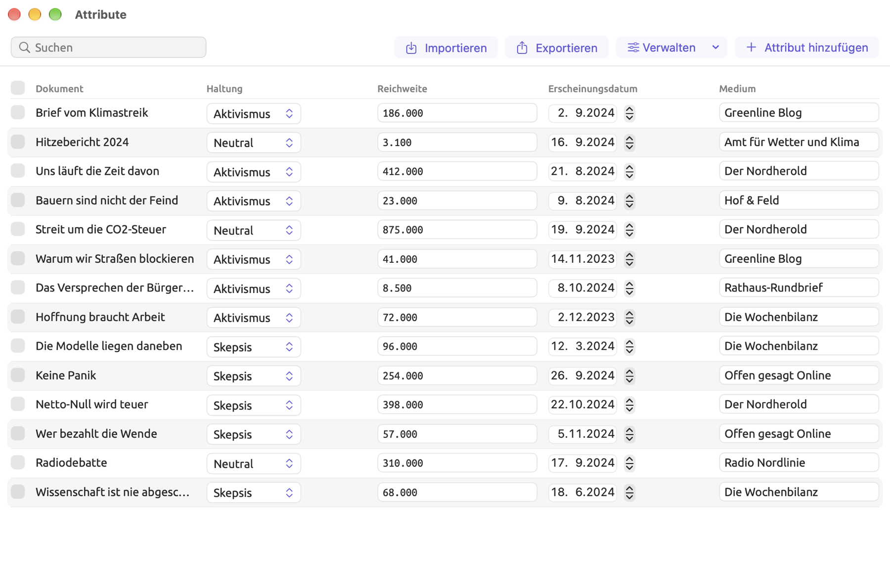
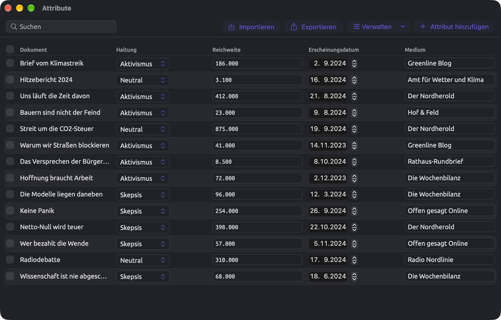
Den Import ausführen
- Wählen Sie in der Seitenleiste das Projekt aus und wählen Sie Projekt ▸ Attribute, oder klicken Sie mit der rechten Maustaste auf das Projekt und wählen Sie Attribute.
- Klicken Sie im Fenster Attribute auf Importieren.
- Wählen Sie die CSV-Datei aus und klicken Sie auf Öffnen. Der Dialog Attribute importieren öffnet sich.
- Prüfen Sie unter Dokument, welche Spalte die Titel enthält. LemmaLoom wählt die Spalte, die zu den meisten Dokumenten passt. Darunter steht, wie viele Zeilen ihr Dokument gefunden haben (zum Beispiel 10 von 11 Zeilen zugeordnet).
- Gehen Sie unter Attribute die Spalten durch. Wählen Sie für jede das Attribut, das sie füllt, Neues Attribut oder Überspringen. Prüfen Sie bei einem neuen Attribut auch den Typ.
- Klicken Sie auf Importieren. LemmaLoom trägt die Werte ein und schließt den Dialog.
Im Widerrufverlauf ist der Import ein einziger Vorgang. Bearbeiten ▸ Attribute importieren widerrufen (⌘Z) nimmt alle Attribute, die beim Import angelegt, und alle Werte, die dabei eingetragen wurden, auf einmal zurück.
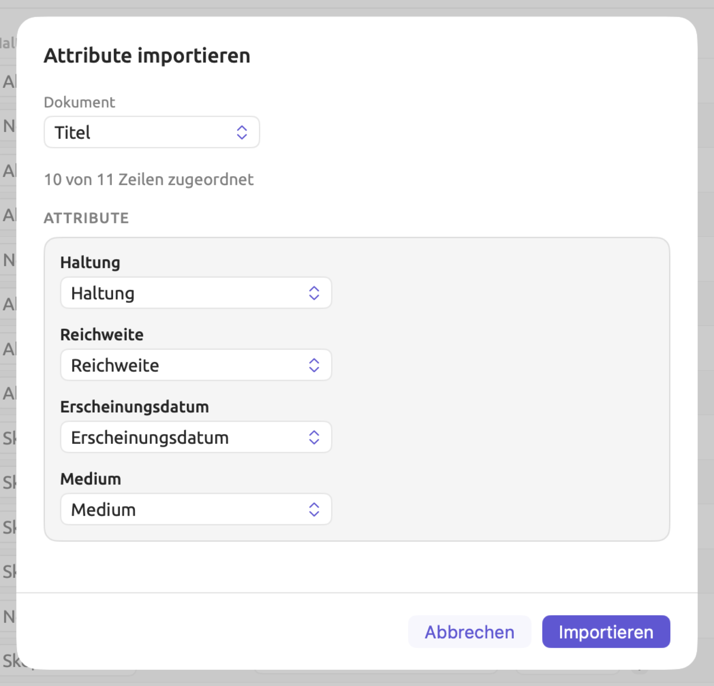
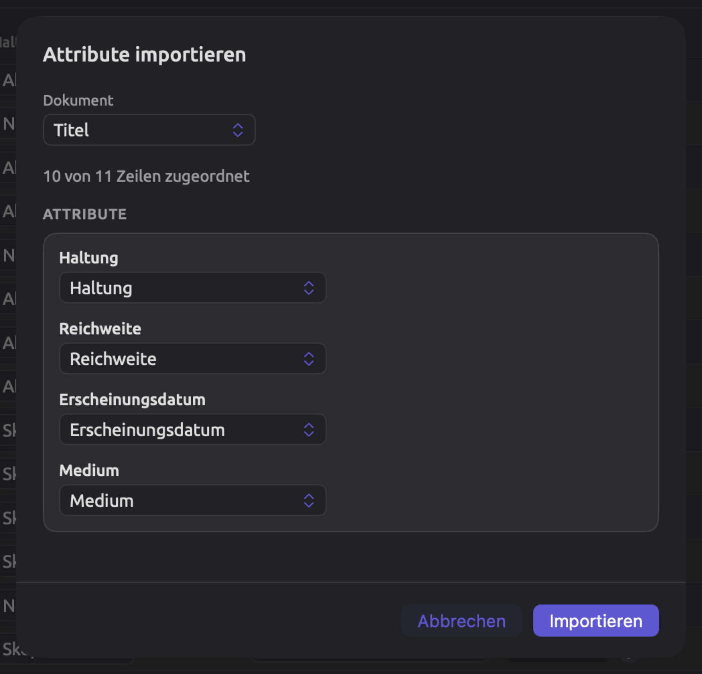
Wie Zeilen ihren Dokumenten zugeordnet werden
Um für jede Zeile ein Dokument zu finden, vergleicht LemmaLoom den Wert in der Spalte Dokument mit den Titeln in Ihrem Projekt und ignoriert dabei Groß- und Kleinschreibung sowie Leerzeichen am Anfang und am Ende. Werte, die für ein Originaldokument eingetragen werden, gehen auch auf seine Übersetzungen über.
Eine Zeile findet kein Dokument, wenn ihr Titel im Projekt nirgends vorkommt oder wenn mehrere Dokumente diesen Titel tragen. Außerdem dürfen nicht mehrere Zeilen auf dasselbe Dokument verweisen; sonst wird keine von ihnen übernommen.
Die Beispieldatei hat unter der Kopfzeile elf Zeilen. Zehn der elf Zeilen finden ihr Dokument. Die Zeile „Keine Panick“ findet jedoch keines. Das Dokument heißt „Keine Panik“ (der Unterschied ist das „c“ vor dem „k“). Der Dialog meldet deshalb 10 von 11 Zeilen zugeordnet. Benennen Sie das Dokument um oder korrigieren Sie die Datei, und importieren Sie dann erneut.
Wie aus Spalten Attribute werden
Jede Spalte erhält zunächst eine Standardzuordnung. Entspricht die Überschrift der Spalte dem Namen eines vorhandenen Attributs (ohne Rücksicht auf Groß- und Kleinschreibung), füllt die Spalte dieses Attribut. Spalten ohne Überschrift oder ohne Werte stehen auf Überspringen; alle anderen stehen auf Neues Attribut, und LemmaLoom versucht, den Datentyp aus ihren Werten abzuleiten.
| Ist jeder Wert | ergibt sich der Typ |
|---|---|
ein Datum in der Form 2024-08-21 | Datum |
true, false, yes oder no | Boolescher Wert |
| eine ganze Zahl | Ganzzahl |
| eine Zahl, mindestens eine davon mit Dezimalpunkt | Dezimalzahl |
| einer von höchstens 12 verschiedenen Werten, von denen mindestens einer mehrfach vorkommt | Auswahl |
| etwas anderes | Text |
Bei dieser Einschätzung werden leere Zellen übergangen. Prüfen Sie die erkannten Typen sorgfältig, bevor Sie importieren. In einem Projekt ohne Attribute ergäbe die Beispieldatei für „Haltung“ den Typ Auswahl, da sich beide Werte, „Aktivismus“ und „Skepsis“, wiederholen. „Reichweite“ erhielte den Typ Ganzzahl und „Erscheinungsdatum“ den Typ Datum. „Medium“ erhielte ebenfalls den Typ Auswahl. Die elf Zeilen nennen sechs Medien, die sich teilweise wiederholen. Wenn Sie erwarten, dass später beliebig weitere Medien hinzukommen, wählen Sie für „Medium“ Text; so ist es im Projekt „Klimadebatte“ gelöst.
Jeder Wert einer Zelle wird dem Dokument einzeln zugewiesen; leere Zellen werden dabei übergangen. Eine leere Zelle lässt den vorhandenen Wert unverändert. Ein Wert in einer gefüllten Zelle überschreibt den aktuellen Wert des Dokuments. Passt ein Wert nicht zum Typ des Attributs, wird er nicht zugewiesen, und der Dialog zählt ihn in der Zeile der Spalte (etwa 1 übersprungen). Ist „Reichweite“ vom Typ Ganzzahl, werden Zellen mit „etwa 400.000“ übersprungen. Attribute vom Typ Boolescher Wert akzeptieren die Werte 1, 0, yes, no, true und false.
Bei einer Auswahl wird jeder Wert, der noch nicht unter den vorhandenen Wahlmöglichkeiten ist, als weitere Wahlmöglichkeit hinzugefügt. Unterscheidet sich ein neuer Wert von einer vorhandenen Wahlmöglichkeit nur in der Groß- und Kleinschreibung, gilt er als diese Wahlmöglichkeit. Erhält ein Attribut, auf dem ein intelligentes Set aufbaut, neue Werte, wird das Set aktualisiert. „Große Reichweite“ („Reichweite“ mindestens 100.000) ist zum Beispiel ein solches intelligentes Set.
Das Fenster „Aktivität“
Das Fenster Aktivität zeigt alles, was LemmaLoom im Hintergrund für Ihre Projekte erledigt. Dazu gehören Importe, Übersetzungen und Indizierungen. Sie öffnen es mit Fenster ▸ Aktivität (⌥⌘0).


Die Abschnitte enthalten verschiedene Teile Ihrer Arbeit. Jeder Abschnitt zeigt die Zahl seiner Einträge in Klammern:
| Abschnitt | Was er auflistet |
|---|---|
| Import | Aufnahmen, die transkribiert werden, und PDFs, die gelesen werden, jeweils mit ihrem aktuellen Schritt; Importe von REFI-QDA-Dateien und Archiven, etwa LemmaLoom-Archiv wird importiert; Dateien und Webadressen, deren Importdialog noch nicht bestätigt ist, angezeigt als Wartet |
| Export | Ein laufender Export einer REFI-QDA-Datei oder eines Archivs, etwa LemmaLoom-Archiv wird exportiert |
| Übersetzung | Übersetzungen, die gerade entstehen oder auf ihren Start warten |
| Indizierung | Dokumente, die indiziert werden, mit Schritt und Prozentangabe, etwa Struktur wird ermittelt 35 %, oder ein Analysator bei der Arbeit, etwa Kohäsion läuft |
| Fehlgeschlagen | Dokumente, deren Indizierung fehlgeschlagen ist, und fehlgeschlagene Übersetzungen, jeweils mit dem Grund |
| Wartend | Dokumente in der Warteschlange für die Indizierung, angezeigt als Wartet auf Indizierung |
Jede Zeile zeigt Status, Namen und Projektnamen. Bei laufender Arbeit steht am Ende der Zeile ein Fortschrittsring (oder eine sich drehende Anzeige). Bei wartender Arbeit steht dort stattdessen ein gepunkteter Kreis. Ist die Indizierung eines Dokuments fehlgeschlagen, erscheint dort ein Link Indizierung wiederholen. Fehlgeschlagene Übersetzungen zeigen einen Link Wiederholen.
Oben im Fenster hat die Symbolleiste ein eigenes Menü Importieren, das Dokumente und Webseiten enthält. Daneben gibt es das Menü, das den Namen des Projekts zeigt, etwa „Klimadebatte“. Mit beiden können Sie in jedes ausgewählte Projekt importieren, unabhängig davon, welches Projekt das Hauptfenster zeigt. Die Importdialoge öffnen sich dann im Fenster Aktivität.
Nach dem Import
Sobald ein Dokument in Ihr Projekt kommt, beginnt LemmaLoom mit der Indizierung. Haben Sie beim Import Für die Grammatikanalyse indizieren deaktiviert, unterbleibt die Indizierung. Die Indizierung zerlegt Texte in Sätze und Wörter und bestimmt dann deren Grundformen und Wortarten. Danach folgen die grammatische Analyse der Sätze, dann die Analysatoren und schließlich die Berechnung der Statistiken für das ganze Dokument. Einzelheiten finden Sie in Kapitel 21, Analyse und Indizierung.
Diese Vorgänge laufen im Hintergrund. Sie können ohne Unterbrechung weiterarbeiten, während die Indizierung läuft. Wie lange sie dauert, hängt von der Hardware Ihres Mac und von der Größe Ihrer Dokumente ab. Wird die Indizierung durch Beenden von LemmaLoom unterbrochen, läuft sie beim nächsten Öffnen der App weiter.
Ein neu importiertes Dokument können Sie sofort öffnen, lesen und kodieren. Funktionen, die auf der Indizierung aufbauen, stehen jedoch erst nach deren Abschluss zur Verfügung. Die Textgestaltung über das Lens-Menü beruht auf den Ergebnissen der grammatischen Analyse; deshalb ist das Lens-Menü bis zum Abschluss der Indizierung deaktiviert, mit dem Tooltip Lenses stehen zur Verfügung, sobald die Indizierung abgeschlossen ist. Siehe Kapitel 6, Lenses. Der Tab Grammatik des Inspektors zeigt bis zum Abschluss der Indizierung die Meldung Die Grammatik wird verfügbar, sobald die Indizierung abgeschlossen ist. Ebenso zeigt der Tab Text bis dahin Statistiken werden verfügbar, sobald die Indizierung abgeschlossen ist. Abfragen zu Wörtern berücksichtigen indizierte Texte. Damit ein Klick auf ein Wort die Aufnahme an diese Stelle setzt, muss die Indizierung abgeschlossen sein.
Die Statusleiste der Leseansicht zeigt den Fortschritt der Indizierung mit Meldungen wie Struktur wird ermittelt 35 %.
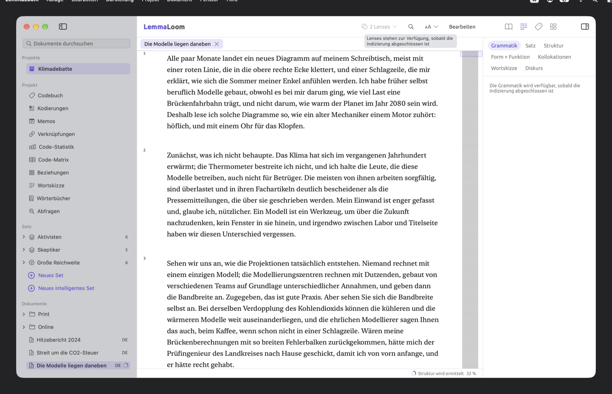
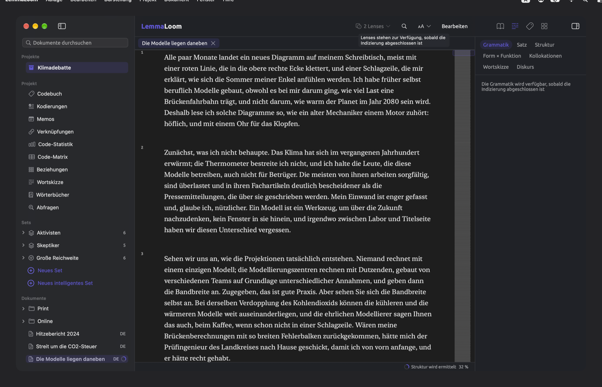
Auch die Seitenleiste zeigt den Fortschritt der Indizierung. Kennzeichen neben jedem Dokument zeigen, wie weit seine Indizierung fortgeschritten ist, wie in Die Seitenleiste in Kapitel 3, Projekte und Dokumente beschrieben. Halten Sie den Mauszeiger auf das Kennzeichen, um eine Erklärung zum aktuellen Schritt der Indizierung und die Prozentangabe zu sehen. Schlägt die Indizierung aus irgendeinem Grund fehl, zeigen sowohl das Kontextmenü des Dokuments in der Seitenleiste als auch die Statusleiste der Leseansicht den Grund an, zusammen mit dem Befehl Indizierung wiederholen.
Insbesondere lösen das Bearbeiten des Textes eines Dokuments und das Ändern seiner Sprache automatisch eine neue Indizierung aus. Auch eine Änderung der Ausschlüsse von der Indizierung führt zu einer neuen Indizierung.